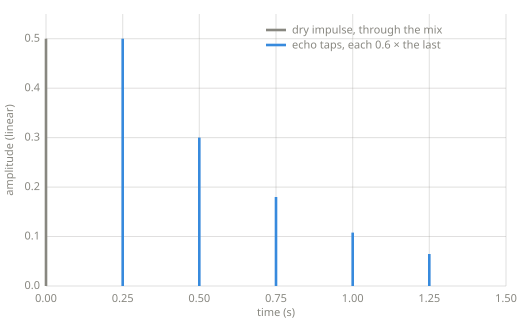

Delay lines¶
Every effect in this chapter is built from one device. A delay line is memory that returns a signal after a wait, \(y[n] = x[n-D]\) for a delay of \(D\) samples. Heard directly it is an echo. Swept by an LFO it becomes vibrato and chorus, and a network of delay lines becomes reverb.
Chapter 7 — delay and modulation. The code on this page is included at build time from
code/delays.py, which is tested.
The ring buffer¶
A delay line needs the recent past. Offline code can index into the input list directly, since the whole signal is already in memory. Real-time code cannot, because the input has no end to hold. The standard tool is a ring buffer: a fixed block of memory with a write position that advances and wraps. Writing overwrites the oldest value, and reading looks backward from the write position, also wrapping. The memory only needs to be as long as the longest delay.
class RingBuffer:
"""Fixed-length memory for a delay line.
Values are written into a fixed list, and a write position advances and
wraps. Reading looks backward from the write position, also wrapping.
Call read before push on each sample: read(d) then returns the value
pushed d samples ago, for 1 <= d <= length, and returns 0.0 before
anything has been written there.
"""
def __init__(self, length):
self.buf = [0.0] * length
self.pos = 0
def push(self, value):
self.buf[self.pos] = value
self.pos = (self.pos + 1) % len(self.buf)
def read(self, delay):
return self.buf[(self.pos - delay) % len(self.buf)]
This is the first effect machinery in the book with more than one sample of state. The envelope follower of Chapter 5 remembers a single number. A delay line remembers a stretch of signal.
Echo¶
An echo is a delay line heard directly, with the output fed back in so each repeat returns quieter:
where \(g\) is the feedback factor. Each round trip through the line multiplies the repeat by \(g\), so the repeats decay geometrically.
def echo(x, sr, delay_ms=250.0, feedback=0.4, mix=0.5):
"""Repeating echo: the recirculated signal returns quieter each pass.
x: list of mono samples in [-1, 1]
sr: sample rate, in samples per second
Returns a new list of samples.
"""
d = max(1, int(sr * delay_ms / 1000.0))
line = RingBuffer(d)
out = []
for s in x:
delayed = line.read(d)
line.push(s + feedback * delayed) # what recirculates
out.append((1.0 - mix) * s + mix * delayed)
return out

The echo's impulse response (code/make_figures.py, run through this page's echo).
Feedback is the whole picture: every tap is the previous tap times the feedback factor,
which is a geometric decay.
Key parameters¶
| Parameter | What it controls |
|---|---|
| Delay | The time between repeats (ms). |
| Feedback | How much of the output recirculates, and so how many repeats are audible. |
| Mix | The balance between the dry signal and the delayed one. |
Pitfalls
- Feedback of 1.0 or more diverges. Each pass then returns as loud or louder, and the output grows without bound. Keep \(g\) below 1.
- Short delays stop sounding like repeats. Below roughly 30 ms the ear fuses the copies into one sound, and the delay line colors the timbre instead. That coloring is the comb filtering that Reverb builds from, and the fused range is where Chorus lives.
Where this leads¶
Vibrato points an LFO at the delay time. Chorus mixes that wobbling copy with the original. Reverb runs many delay lines at once.
Learn more¶
- Udo Zölzer (ed.), DAFX: Digital Audio Effects, 2nd ed., Wiley — delay-based effects.
- Julius O. Smith III, Physical Audio Signal Processing, ccrma.stanford.edu/~jos/pasp — delay lines and comb filters, formally.